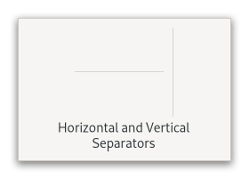

Gtk.Separator¶
Example¶
- Subclasses
None
Methods¶
- Inherited
Gtk.Widget (181), GObject.Object (37), Gtk.Accessible (15), Gtk.Buildable (1), Gtk.Orientable (2)
- Structs
class |
|
Virtual Methods¶
Properties¶
- Inherited
Signals¶
- Inherited
Fields¶
- Inherited
Class Details¶
- class Gtk.Separator(**kwargs)¶
- Bases
- Abstract
No
GtkSeparatoris a horizontal or vertical separator widget.An example
Gtk.SeparatorA
GtkSeparatorcan be used to group the widgets within a window. It displays a line with a shadow to make it appear sunken into the interface.- CSS nodes
GtkSeparatorhas a single CSS node with name separator. The node gets one of the .horizontal or .vertical style classes.- Accessibility
GtkSeparatoruses theGtk.AccessibleRole.SEPARATORrole.- classmethod new(orientation)[source]¶
- Parameters
orientation (
Gtk.Orientation) – the separator’s orientation.- Returns
a new
GtkSeparator.- Return type
Creates a new
GtkSeparatorwith the given orientation.